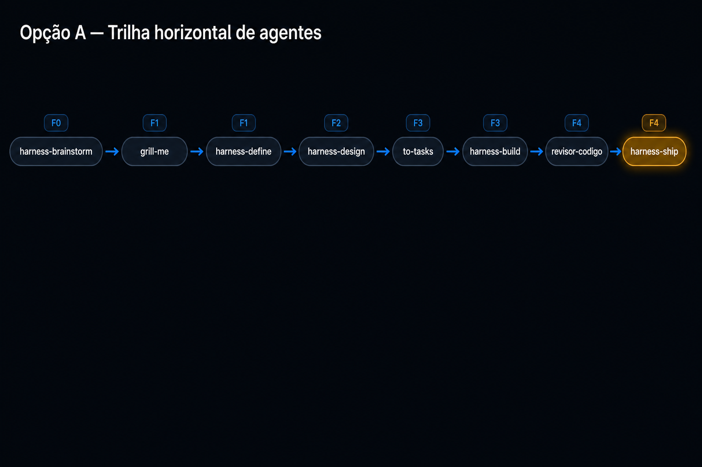
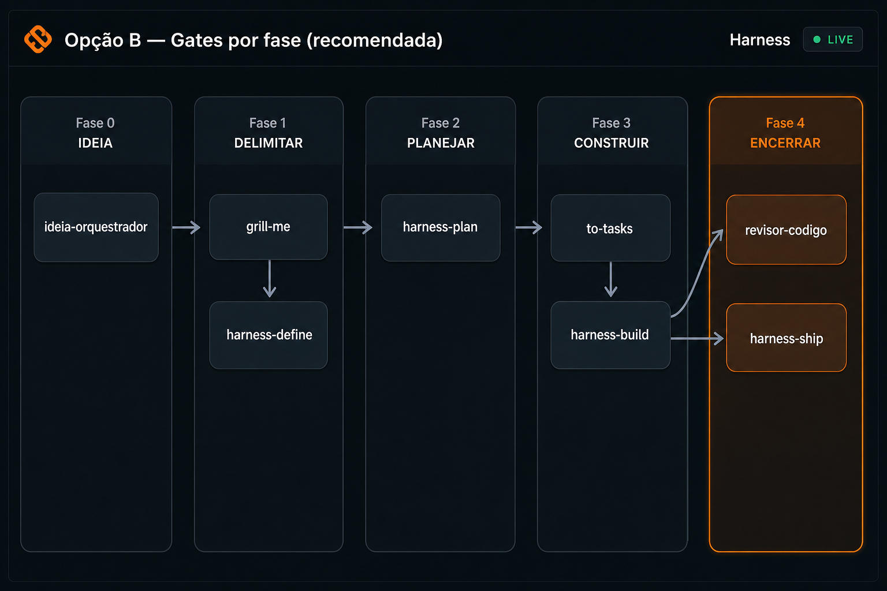
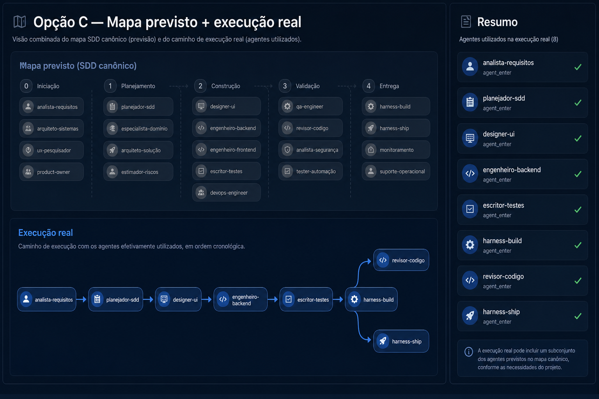

Problemas do estado atual
Grafo causal
- Rótulo
agent_enter+ UUID truncado - Layout em grade — difícil ler ordem temporal
- Parent sparse: poucas setas entre nós irmãos
- Não destaca múltiplos agentes no mesmo gate
Timeline + mapa lateral
- Lista crua de enter/exit com timestamp ISO
- Redundante com fluxograma canônico + causal
- 4 painéis na mesma tela — sobrecarga visual
Sequência real (silver-checklist-odcs)
Derivada de agent_enter cronológico — o que o visual deve contar:
harness-brainstorm
→
grill-me
→
harness-define
→
harness-design
→
to-tasks
→
harness-build
→
revisor-codigo
→
harness-ship
Fase 1: 2 agentes · Fase 3→4: build invoca revisor (filho causal) antes do ship. O visual precisa mostrar isso sem expor IDs.
Três opções visuais



Comparativo rápido
| Critério | A — Trilha | B — Gates | C — Dual |
|---|---|---|---|
| Só nome do agente | Sim | Sim | Sim |
| Múltiplos agentes por fase | Badge F1 repetido | Coluna empilhada | Coluna + resumo |
| Setas agente→agente | Horizontais | Vert + horiz | Horiz + fork |
| Mapa canônico SDD | Removido / tab | Substituído | Mantém esmaecido |
| Complexidade implementação | Baixa | Média | Alta |
Recomendação (Opção B + ajustes)
Substituir “Grafo causal” por “Trilha de execução”
- Nova função pura
build_execution_trail_svg(events)emrender.py - Entrada: lista de
agent_enterordenada ports - Nó: só
agent+ badgeF{n}; estado done/active - Arestas: seta do enter anterior → próximo (ordem temporal)
- Layout: colunas por fase; dentro da coluna, stack vertical com setas
- UUID / event_type: tooltip ou modo debug (D), não no rótulo
Timeline → “Resumo humano”
- Colapsar enter+exit: “grill-me · 9 min · concluído”
- Ocultar
ship_truncatena vista default
Remover redundância
- Manter 1 fluxograma (execução) + 1 painel resumo
- Mapa canônico 0–4: aba “Previsto” ou accordion colapsado
Próximo passo (Dev Loop)
Após escolha (B recomendada): criar branch feat/fluxo-live-exec-trail,
task em tests/fluxo_events/, alterar build_causal_svg ou
adicionar SVG paralelo, re-render dogfood em silver-checklist-odcs.